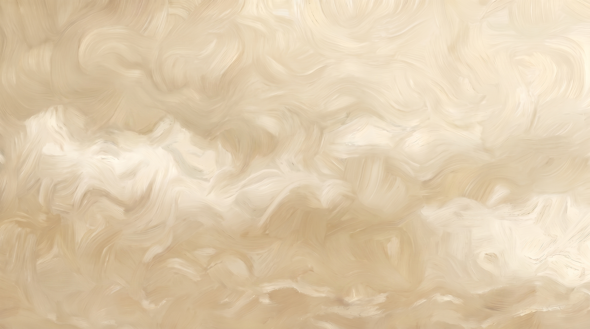
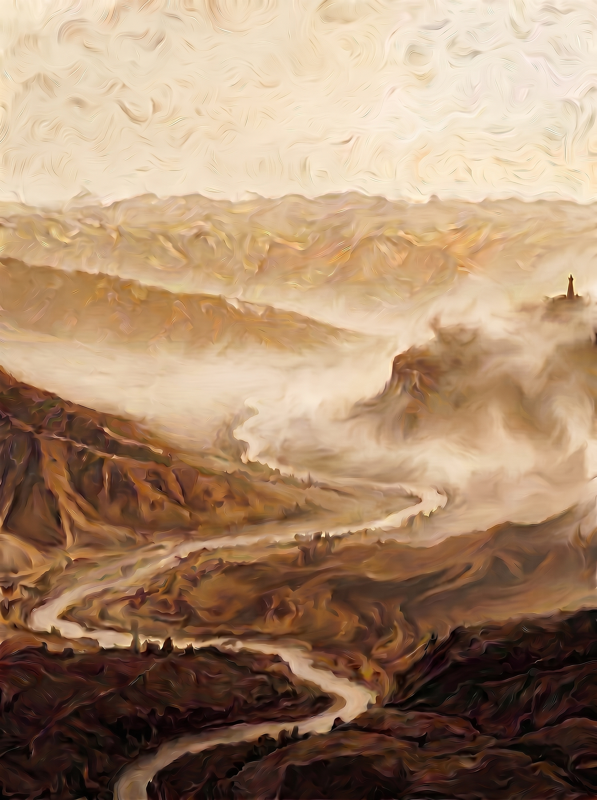
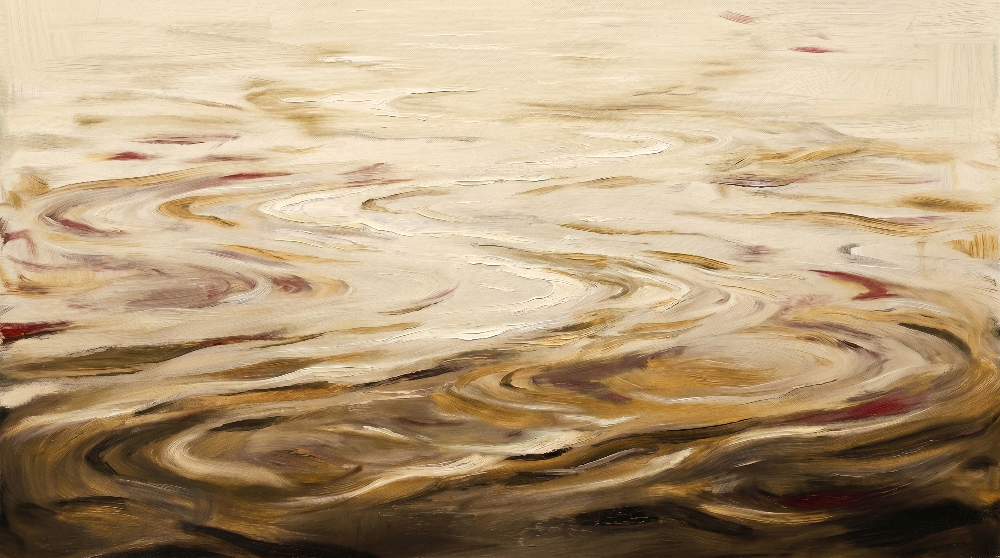

Niveau 1
Uniforme
Le plus calme. Fonds de pages de contenu, lectures longues, documentation technique.
La direction visuelle de jacques n'est pas photographique au sens du reportage : elle est picturale. Un paysage aérien peint au pinceau brossé, vallonné, traversé d'une rivière argentée — et, posé tout en haut à droite, un foyer chaud minuscule qui ne tente jamais de couvrir le paysage. Toute la scène respire la crème diurne du parchemin de veille ; le repère, lui, tient à part. C'est sa stabilité, pas sa taille, qui rend la traversée lisible.
Pas de banque d'images, pas de mise en scène : la matière est une peinture à l'huile brossée, empâtements directionnels visibles, aucune surface lisse. On lit le paysage d'au-dessus comme une carte vivante. Le foyer chaud reste ponctuel — jamais un mur de couleur, toujours une pointe.




Le color grading diurne se lit comme une rampe : du plus calme (uniforme) au plus contrasté (dramatique). Chaque niveau a un usage assigné — fond de contenu, surface de section, accent, moment de vision. La masse reste toujours crème ; ce qui change, c'est l'intensité du foyer et la profondeur des creux.



L'image-pivot n'est pas montrée dans un mockup de device : elle est posée plein-format comme un tableau de référence, accompagnée du contrechamp depuis le repère et de la version animée du faisceau. C'est ainsi qu'elle vit dans un support — en surface dominante, jamais en vignette décorative.
Médium pictural (peinture à l'huile brossée) — registre MidJourney, pas de vecteur Recraft. Les prompts ci-dessous reproduisent la signature : paysage aérien peint, foyer chaud ponctuel, palette crème graduée, brushwork tourbillonnant. Copier, coller, générer.
brushed oil painting, aerial top-down view of a rolling valley at twilight, swirling impasto brushwork like Van Gogh, a silver serpentine river winding through the hills, one tiny warm point of light on the far upper-right ridge, cream and parchment palette, soft sandy ochres, painterly texture everywhere, no smooth areas, --ar 3:4 --style raw --s 250
brushed oil painting, view looking out from a high fixed vantage over a painted valley, thick directional brushstrokes on the slopes, low diffuse daylight, a single warm glow in the foreground reading as a steady beacon, warm cream tones, patinated bronze accents, foggy painterly atmosphere, edges crisp on the focus only, --ar 4:5 --style raw --s 200
macro oil painting detail, close-up on a warm halo of light emerging from dense painterly darkness, visible impasto strokes, palette-knife texture, cream and ochre pigments melting into warm bordeaux at the core, no perfect circle, irregular organic edge, tactile paint surface, --ar 1:1 --style raw --s 300
brushed oil painting, same aerial valley veiled in painted morning fog, the silver river still legible as the directing line, cream parchment dominant, fog rendered as moving paint not smooth haze, swirling sky, faint warm beacon barely visible, --ar 3:4 --style raw --s 250
Douze colonnes, gouttière constante, marges franches. La structure se lit comme une carte du SHOM : tout est posé sur le même repère, et un seul bloc — le foyer — capte la chaleur. Le reste sert de support documentaire.
12 colonnes Gouttière constante · non négociable Marges franches
Deux régimes, jamais l'entre-deux mou. La planche aérée laisse respirer chaque énoncé : c'est la posture du faisceau qui balaie loin. La planche compacte resserre le relevé : c'est la table de quart, lue d'un coup d'œil. Mêmes contenus, densités opposées.
Une idée se pose, seule, et tient l'espace. Le lecteur a le temps de viser avant que la suivante n'arrive.
Marge intérieure ample, interligne ouvert. La page devient un balayage calme et certain.
Aéré = portée Compact = relevé Différence de marge ×3
Chaque gabarit casse la symétrie de défaut : ratios francs, débordements maîtrisés, un seul bloc chaud par composition. Les maquettes sont montrées telles qu'on les pose — pas décrites de loin.
Texte à gauche, planche peinte à droite. Le titre éditorial empiète légèrement sur la matière. Jamais de partage cinquante-cinquante.
Cellules de tailles inégales, gouttière constante. Le bloc dominant occupe deux modules ; un seul module porte l'accent bordeaux.
Bandeau pleine largeur en tête, trois colonnes égales en pied. Le marqueur bronze signale la colonne pivot — preuves, chiffres, méthode.
Énoncé centré sur masse claire, puis barre signal pleine largeur en bordeaux. Le foyer arrive en dernier, comme l'éclat qui ferme la rotation.
L'unité de base est le pas de huit ; les graduations majeures tombent tous les quarante. Le rythme n'est pas plat : un bandeau ample, un écart franc, une carte dense, puis l'éclat final. La cadence guide l'œil sans jamais le perdre.
Unité 8 Graduation majeure 40 Rythme haché, pas régulier
Le médium est pictural : huile brushée, empâtements visibles, texture de toile peinte. Aucun aplat vectoriel, aucun trait flat, aucun grain photographique ou numérique. Quatre propriétés gouvernent chaque visuel — chacune est montrée ici sur la surface qu'elle décrit.
La matière a une épaisseur et un sens. Les passes suivent le relief du paysage, jamais une trame régulière.
Le ciel et la terre s'enroulent en volutes à la Van Gogh. Pas de fond plat : le mouvement occupe tout le champ.
La crème domine. Le bronze et le bordeaux n'apparaissent qu'en un foyer ponctuel — l'événement chromatique unique.
La texture est celle d'une toile travaillée à l'huile — un grain organique de matière, jamais un bruit photo ni un dithering.
Le système n'a ni mascotte ni figure illustrée. Son vocabulaire est fait de trois motifs picturaux qui reviennent d'un visuel à l'autre. Chacun est montré ici dans son contexte d'usage : posé sur la matière brushée, derrière le texte qu'il accompagne.
Le faisceau tracé dans le paysage. Sert de fil conducteur — guide l'œil d'un bord à l'autre d'une composition, en couverture comme en séparateur de section.
L'unique chaleur. Toujours seul, jamais répété dans le même cadre. Marque le point de ralliement — un repère, un CTA, une donnée pivot.
Les plans étagés de la vallée. Donnent la profondeur sans illustrer un sujet — la trame brushée derrière laquelle vient se poser le texte.
Quatre règles règlent la rencontre entre la peinture, le texte et l'appel à l'action. Chaque règle est démontrée sur un mini-cas, pas seulement énoncée.
La peinture occupe sa zone, le texte la sienne. On ne pose jamais un paragraphe sur le brushwork agité : on le pose à côté, sur une surface calme.
Entre l'illustration et tout texte, une gouttière franche. La matière a besoin d'air pour rester lisible comme peinture, pas comme texture de fond.
Quand la peinture et l'appel à l'action coexistent, le foyer chaud gagne la hiérarchie. La matière s'efface en arrière-plan, le signal occupe le premier plan.
En couverture, le paysage occupe le cadre, le foyer reste minuscule. En composant, on garde le foyer seul. En pied de page, il s'éteint presque — un filigrane.
Le médium est pictural : on prompte en peinture à l'huile, jamais en flat ou vector. L'outil recommandé est MidJourney — Recraft ne convient pas ici (il produit du vectoriel). Reprenez la structure : huile brushée, paysage aérien, masse claire dominante, foyer chaud unique.
expressive oil painting, aerial cartographic view of a rolling valley crossed by a serpentine silver river, thick directional brushwork, impasto, swirling Van Gogh-like sky, 5 layered relief strata, a tiny single warm light point top-right (lighthouse, <0.1% of frame), creamy graded palette parchment beige and patinated bronze, no smooth areas, painterly texture, --ar 3:4 --style raw --s 250
brushed oil landscape, abstracted painted ridges and mist in motion, no architecture, only natural matter (light, sky, terrain, water), heavy visible brushstrokes, warm cream and sand tones, soft daylight color grading, one faint warm focal glow, painterly negative space, --ar 16:9 --style raw --s 200
close oil painting study of a single warm light source on a brushed ridge, deep bordeaux and bronze glow against pale cream surroundings, thick impasto strokes radiating outward, the light stays small and precise, calm focal point in agitated matter, --ar 1:1 --style raw --s 220
Anti-prompt — ne jamais produire : postcard lighthouse in a storm, romantic sea mist, decorative maritime icons, flat vector illustration, coaching / motivational imagery, blue-violet gradients, smooth digital render. --no flat vector, postcard, storm, stock photo, neon, blue gradient, glossy 3d